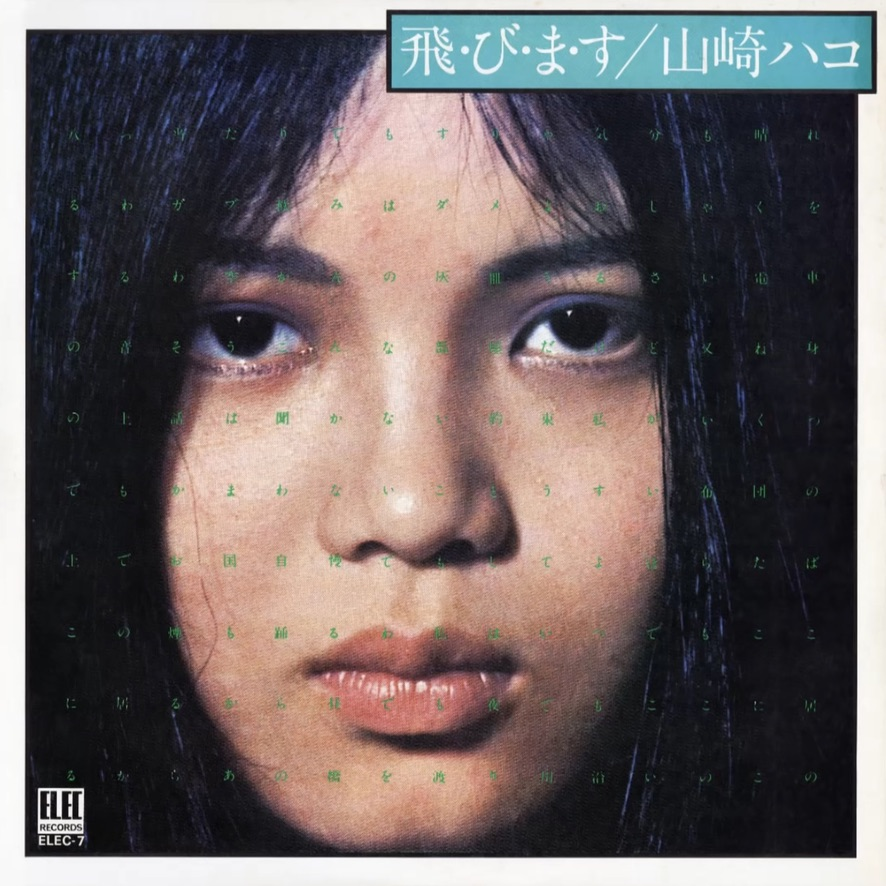
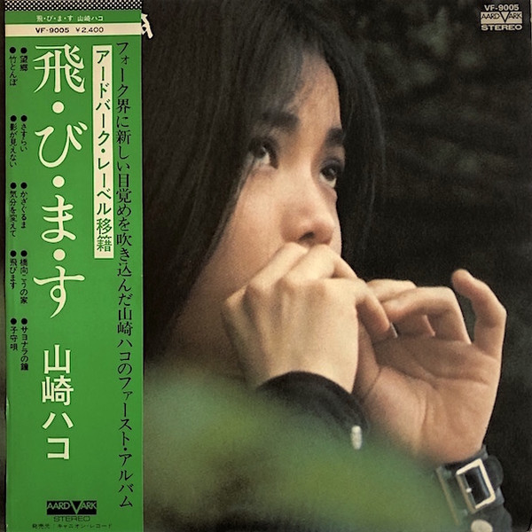

Day 55

山崎ハコ ◆ と・び・ま・す ◆ 1975
我本来以为发过她了，结果一找发现完全没有。我应该是在年初，从油管推荐听到了这张专辑，惊为天人，尤其是第二首「さすらい」里“女妖一般的歌声”我闻所未闻，真是独特。山崎ハコ的歌旋律歌词都很棒，感情丰富，唱功让人享受，不明白为什么没火，真是天理难容。（另外这张专辑的 LP 封面和 CD 还不一样，也挺好看的。）
这次我干脆直接链接整张专辑了，省得纠结放哪首歌，专辑里每首歌我都挺喜欢。下面是几首歌的歌词，全放有点麻烦，所以就放我印象比较深刻的。
さすらい
ふるさとはない
今 歩く道だけ
気に入った町が新しい 私のふるさと
いつの間にか 色あせ
うすれてしまった
恋しかったはずの
あの山々
私の 肌につきささる
あの霧の白さが 恐かった
愛する人はない
今一人 さすらいの中
夕陽に唄えば赤い歌声
それが それが なぐさめ
見知らぬ町で出連った
やさしい人でも
心を見せられない
今の私なのさ
わかりあえないものならば
他人でいよう みんな
遠い明日は見たくない
ふり向きたくもない
今の私が生きている
他に何もない
たった一人のものだから
どんな明日も恐くない
どんな明日も恐くない
サヨナラの鐘
小さな雨がふっている 一人髪をぬらしている
長い坂の上から 鐘がかすかに聞こえる
私の心の中の 貴方が消える
恐かった淋しさが からだを包む
グッバイ貴方 私 先を越されたわ
グッバイ貴方 その顔が目に浮かぶわ
いつだったか笑って 二人別れていった
きれいな思い出にするわ 元気でと別れていった
いつの日か心の中に 貴方が住み込んで
幼い子供のように ひそかにあこがれた
グッバイ貴方 バカねバカね私
グッバイ貴方 小さな声でおめでとう
グッバイ貴方 ステキな鐘の音
グッバイ貴方 サヨナラとなりひびくわ
グッバイ貴方 ステキな鐘の音
グッバイ貴方
来源：uta-net
最后是一些油管上的评论：
po主：
Hako Yamasaki's debut is more consistently neurotic than the classic Tsunawatari. Yamasaki wails like a siren at sea, and just as beautiful. Nostalgia and Wandering hooking you right into the melancholy mood the album oozes. Change Of Pace and the title track are a departure from the tone of the previous songs, and welcome ones at that, but only to come right back down with Lullaby. It's a more cohesive work than Tsunawatari, if less technically impressive. A Male And Female In A Room is the bonus track off the CD remaster, but the perfect end to this album. I had to include it.
Alan D'Souza:
Just found out that she was almost homeless in 1998 and recently got back to performing live shows. Pretty sad.
@kai kito this really happened and even the japanese media were unaware of it. She had totally fallen off the radar and during the Japanese economic meltdown in the 90s became homeless along with her husband. She described her experience and how starting to do limited live shows for small groups of fans in local halls helped her get off the streets. You can check her japanese wiki to find links to her personal website (japanese) where you can find fixtures for newer shows (a couple or so a year) if you are thinking of attending or if you want to help her out in anyway. Regards.
She even did voice acting for a minor character in some anime for very small kids. Her life seems to be hard, coty pop in general has had a resurgence only lately and during it's heyday was considered a trashy genre, and she in particular never really caught on in japan at that time, so her local fan base is mostly newer fans discovering her work in this age of renaissance of city pop due to nostalgia.
LP 封面：
